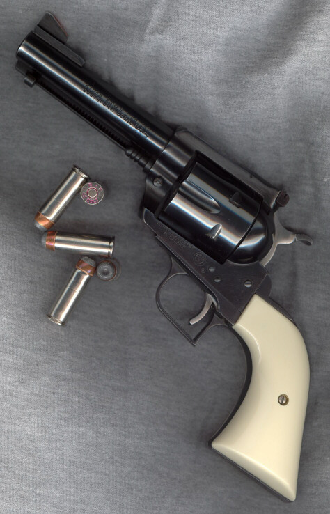
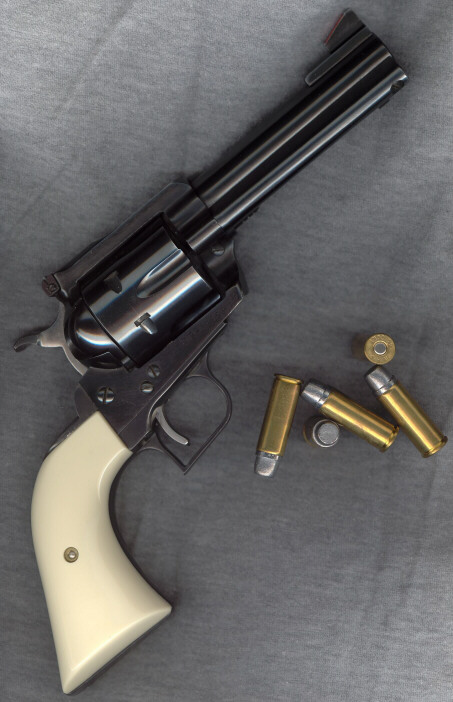

Some Gun Pix
by L. Neil SmithPage 2


These are pictures of my trusty Ruger "Superized" Blackhawk .45 Convertible. I've had this gun a long time and it's been a good friend. It's a "three-screw" or middle model, manufactured after the original "flattop", but before the Ralph Nader Safety-first models. I call it "Superized" because shortly after acquiring it, I removed the dinky little aluminum grip frame Ruger puts on these things, and replaced it with an OEM Super Blackhawk grip frame intended for a .44 Magnum. The grip's a good deal longer, and these Ajax "ivory polymer" panels are the most comfortable I've ever had. If I can find another Super Blackhawk grip frame, preferably in stainless, I'm going to put it on my cartridge-converted Old Army .45.
In addition to the grip frame, I put a wide-spur hammer on the piece (and I would do that with every gun I have if I could), and a wide trigger, from which I'm eventually going to remove the serrations entirely. There's a very clever aftermarket trigger stop behind the trigger that prevents backlash. The hammer's geometry is also quite different from the original, in that the spur sits lower and is easier to reach with the thumb. Both hammer and trigger are OEM Super Blackhawk parts.
Most recently, I've added an aftermarket steel ejection-rod housing made by an outfit in New Mexico. It came from Brownell's. I like the added weight up front, and I worry less about it getting dinged in the field and jammed up. Once again, I'll put these steel pieces on all my single-actions when I can.
By the way, note the different cartridges, both of them my reloads. One is a 265-grain hand-cast semiwadcutter going about 1000 feet per second. I shot a mule deer in the back of the head with that one once, and blew his entire lower jaw off.
The other load is a 250-grain jacketed hollowpoint going about 1100 feet per second. In wet sand, it flattens out to the size of a silver dollar (remember those?) and looks kind of like a sunflower. Obvious social load.
He was delicious.